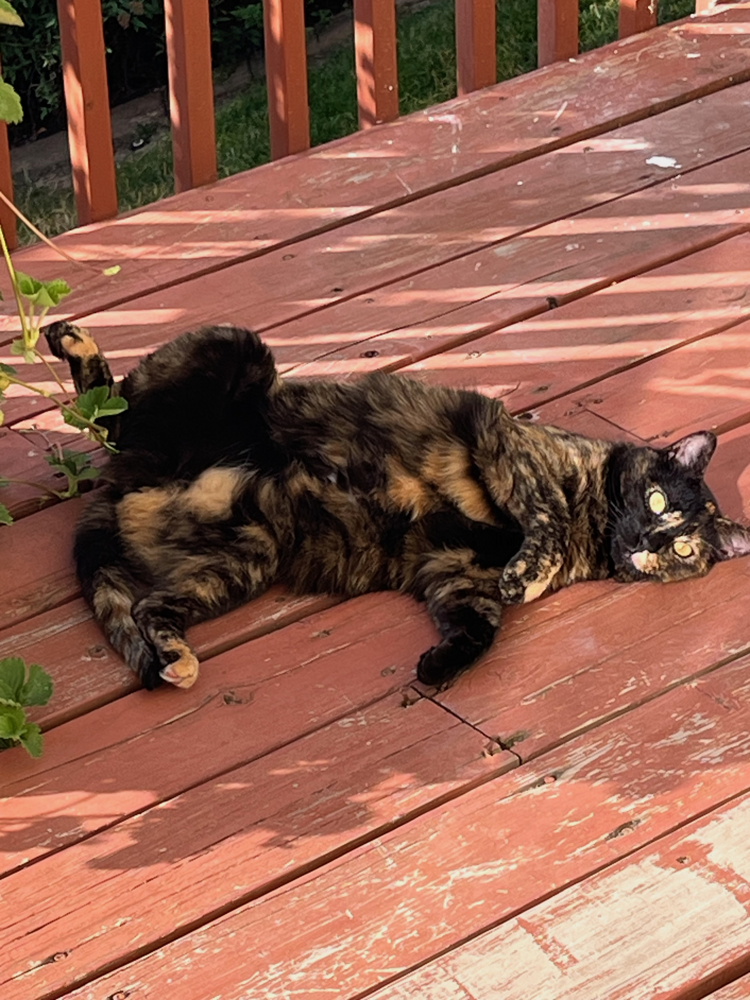

10 - HTTP
Study Guide for Python Programming: Unit on HTTP

Pickle cares not for HTTP!
HTTP GET Syntax
Pickle made a summary of the requests.get() function in Python:
Purpose:
- Used to send an HTTP GET request to a specified URL.
Basic Syntax:
response = requests.get(url, params=None, **kwargs)
Parameters:
url: The URL to which the GET request is sent.params: (Optional) A dictionary or bytes to be sent in the query string of the URL.**kwargs: (Optional) Additional arguments thatrequestscan accept, such asheaders,cookies,auth(authentication),timeout, andproxies.
Return Value:
- Returns a
Responseobject that contains the server’s response to the HTTP request.
- Returns a
Key Attributes of Response Object:
status_code: The HTTP status code of the response.text: The content of the response in Unicode.content: The content of the response in bytes.headers: A dictionary-like object containing the response headers.url: The URL of the response.json(): A method to decode the JSON response content into a dictionary.
Common Usage:
- To retrieve data from a specified resource.
- To interact with web APIs that return data in various formats, commonly JSON.
- To send additional information through query parameters.
Error Handling:
- It’s important to check the
status_codeor useresponse.raise_for_status()to handle potential HTTP errors gracefully.
- It’s important to check the
Example:
import requests response = requests.get("https://api.example.com/data", params={"key1": "value1", "key2": "value2"}) if response.status_code == 200: data = response.json()
Study Guide for Python Programming: Unit on HTTP
Key Concepts
HTTP: The Protocol of the Web
- URL Requests: Making a request by typing a URL in a browser.
- Stateless Protocol: Each HTTP request is independent of others.
- Response: Contains a status code and content (often HTML).
HTTP Request Verbs
- GET: Retrieves resources.
- POST: Sends large data payloads as input.
- PUT: Used for updates.
- DELETE: Used to delete resources.
HTTP Response Status Codes
- 1xx: Informational.
- 2xx: Success (e.g., 200 OK).
- 3xx: Redirection.
- 4xx: Client Error (e.g., 404 Not Found).
- 5xx: Server Error.
Sending Data over HTTP
- In the URL: E.g.,
GET http://www.someapi.com/user/45. - On the Query String: Key-value pairs on the URL, e.g.,
GET http://www.someapi.com?user=45. - In the Request Header: Key-value pairs in the HTTP header.
- In the Body of an HTTP Post: Data in any format in the body of a POST request.
Python Requests Module
- Usage: To make HTTP requests in Python.
- Handling Responses: Interpreting the response data, including status codes and content.
- De-serializing JSON Output: Converting JSON data from the response into Python data structures.
Practical Applications
- Geocoding: Converting addresses to GPS coordinates.
- Weather Data API: Retrieving weather forecasts and related information.
Practice Questions
What HTTP status code represents a successful response? A. 404 B. 500 C. 200 D. 302
What does
requests.get()do in Python? A. Sends a POST request to a URL. B. Requests a resource using the GET method. C. Deletes a resource at a specified URL. D. Updates a resource.In HTTP, which method is commonly used for updating a resource? A. GET B. POST C. PUT D. DELETE
What Python module is commonly used for sending HTTP requests? A. urllib B. requests C. http D. api
When using the requests module, what object contains the response from an HTTP request? A. The URL object B. The response object C. The header object D. The data object
Correct Answers and Explanations
- Answer: C. 200
- Explanation: HTTP status code 200 is the standard response for a successful HTTP request.
- Answer: B. Requests a resource using the GET method.
- Explanation: The
requests.get()function in Python is used to make an HTTP GET request to a specified URL.
- Explanation: The
- Answer: C. PUT
- Explanation: The HTTP PUT method is typically used for updating an existing resource on the server.
- Answer: B. requests
- Explanation: The
requestsmodule in Python is widely used for making HTTP requests.
- Explanation: The
- Answer: B. The response object
- Explanation: In the
requestsmodule, the response from an HTTP request is stored in a response object, which contains the status code, headers, and body of the response.
- Explanation: In the